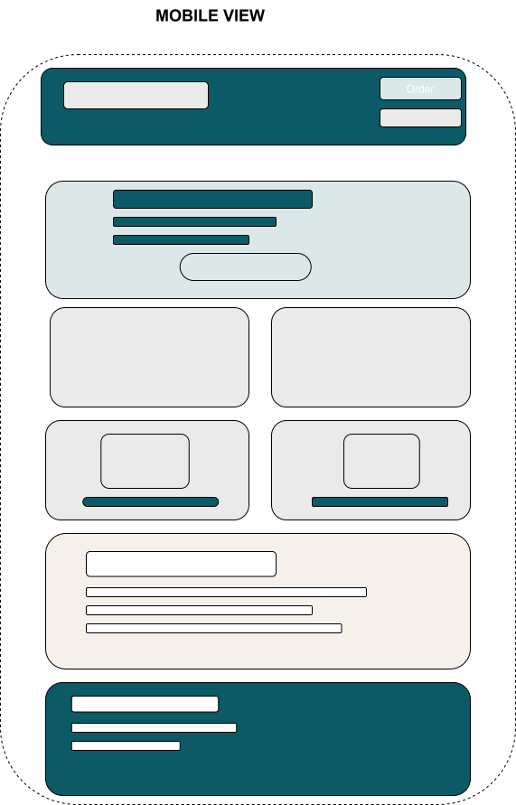
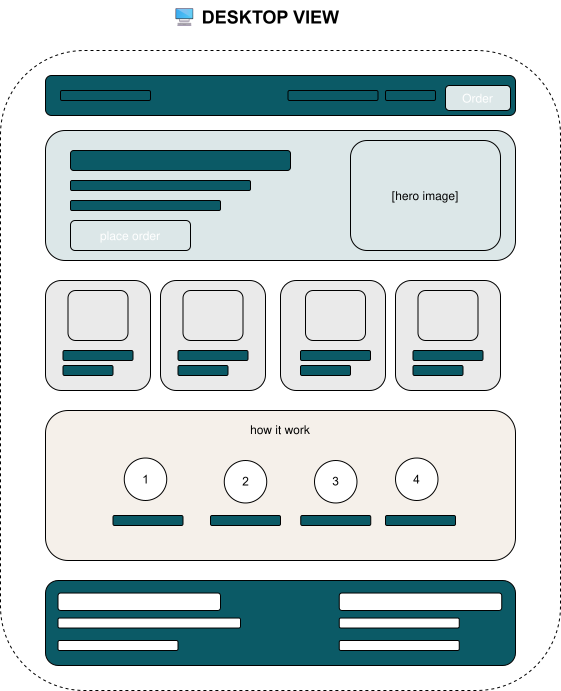

Site Name
FreshFold Laundry Co.
The name FreshFold was chosen because it reflects the two key outcomes customers expect from a laundry service: fresh, clean clothing and neatly folded garments ready for use. The name is simple, memorable, and instantly communicates the company's purpose. Adding "Co." gives the brand a professional identity that helps establish credibility and trust.
Site Purpose
FreshFold Laundry Co. provides a modern online platform where customers can explore available laundry services, submit orders, and monitor the progress of their laundry in real time.
The website consists of three primary sections:
- A homepage introducing services, pricing, and company information.
- An order form where customers can request laundry services and provide order details.
- A customer dashboard that simulates real-time order tracking.
The dashboard displays five order stages: Order Received, Washing in Progress, Drying Completed, Ready for Pickup, and Delivered. Notification popups will appear whenever an order progresses to the next stage.
Customer order information will be stored using the browser's localStorage API, allowing order details and tracking information to persist between pages without requiring a backend database.
Target Audience
FreshFold Laundry Co. is designed for busy professionals, students, families, and individuals seeking a convenient and reliable laundry solution. The website focuses on simplicity, accessibility, and a mobile-friendly experience.
Scenarios
- How can I track the current status of my laundry order?
- What laundry services are available and how much do they cost?
- When will my laundry be ready for pickup or delivery?
- How do I submit a new laundry request online?
- How can I contact the laundry service for support?
Color Scheme
#0B3C5D
Primary brand color used for headers, navigation, headings, and key sections.
#9A5D12
Accent color used for buttons, links, highlights, and calls-to-action.
#081521
Dark color used for footers and high-contrast content areas.
Typography
Playfair Display will be used for page headings, hero content, and section titles to create a professional and elegant appearance.
DM Sans will be used for body text, navigation menus, buttons, forms, and general user interface elements to ensure readability across devices.
Homepage Layout Wireframes
The following wireframes illustrate the planned content structure for both mobile and desktop screen sizes.
📱 Mobile View

🖥️ Desktop View
